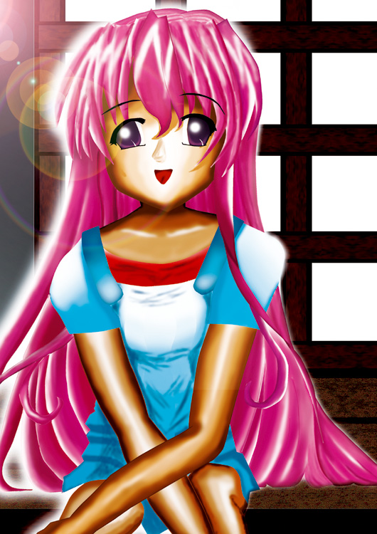

Title: 陽だまり
製作者： LOVESOUND
コメント： こんにちは。1年の LOVESOUNDといいます。 見ての通り？のぽんこつさんです。まあ、気にしないでください（ｗ 実は初めての作品です。それなりに頑張ったつもりです。 線画を消す画法を見てやってみたいと思ったのですが、 初心者の私ではやはり難しかったです。（影とか、光とかの調節が） 全てにおいてまだまだなので、これからも頑張っていきます。